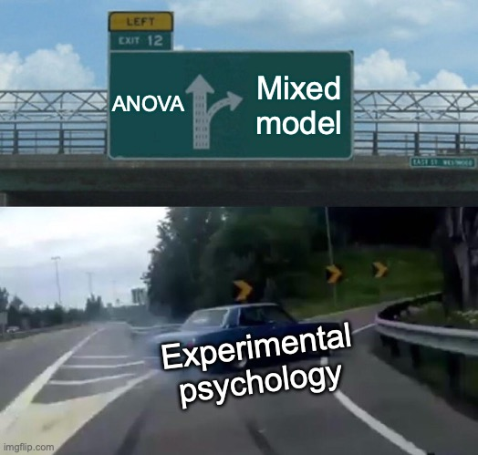

7. Statistical modeling
2023-01-03
Source:vignettes/v7-statistical-modeling.Rmd
v7-statistical-modeling.Rmd🎯 GOALS
Testing if there is a statistically reliable difference in ERP amplitudes (here: N170 component) between experimental conditions (here: faces versus cars).
7.1 Intro: Ants
Like ants, scientists can achieve amazing things if they cooporate
But sometimes they get lost by blindly following one another
Figure: Ants being collectively clever and collectively stupid.1
7.2 t-test
We’ll start with modeling data for a single subject and move to a group analysis (inclduding all 40 ERP CORE participants) in Section 7.4
-
Load required packages:
- Load the single trial mean N170 amplitudes (= one micro-voltage per trial):
bids_dir <- here("data/n170")
deriv_dir <- here(bids_dir, "derivatives/eegUtils/sub-001/eeg")
trials_file <- here(deriv_dir, "sub-001_task-N170_trials.csv")
dat_trials <- read.csv(trials_file)
head(dat_trials)## epoch stimulus condition amplitude
## 1 72 41 car 1.077073
## 2 105 41 car 2.541544
## 3 30 42 car 4.097639
## 4 108 42 car 2.521141
## 5 26 43 car 4.541256
## 6 61 44 car 8.356623-
Student’s
t-test for the difference between
"car"trials and"face"trials:
t.test(amplitude ~ condition, data = dat_trials)##
## Welch Two Sample t-test
##
## data: amplitude by condition
## t = 3.9289, df = 148.98, p-value = 0.0001302
## alternative hypothesis: true difference in means between group car and group face is not equal to 0
## 95 percent confidence interval:
## 1.386838 4.193319
## sample estimates:
## mean in group car mean in group face
## 2.6422692 -0.1478094- Conclusion: For participant
sub-001, face images (as compared to car images) elicit more negative voltages in the N170 time range
7.3 Linear regression
The t-test from Section 7.2 is identical to a simple linear regression model
-
Define model formula:
- N170
amplitudeis predicted (~) by an intercept (1) and theconditioneffect (faces vs. cars)
- N170
form_lm <- amplitude ~ 1 + conditionlm()function implicitly codes"car"trials with0and"face"trials with1Intercept therefore is the average N170 voltage in car trials
Predictor effect (
epoch_labelsface) is the difference between a face trial and a car trialThis effect explains 8.7% of the variance in the N170 (see \(R^2\))
##
## Call:
## lm(formula = form_lm, data = dat_trials)
##
## Residuals:
## Min 1Q Median 3Q Max
## -9.9302 -2.5755 -0.8988 1.4419 17.6916
##
## Coefficients:
## Estimate Std. Error t value Pr(>|t|)
## (Intercept) 2.6423 0.5039 5.244 5.3e-07 ***
## conditionface -2.7901 0.7103 -3.928 0.00013 ***
## ---
## Signif. codes: 0 '***' 0.001 '**' 0.01 '*' 0.05 '.' 0.1 ' ' 1
##
## Residual standard error: 4.364 on 149 degrees of freedom
## Multiple R-squared: 0.09385, Adjusted R-squared: 0.08777
## F-statistic: 15.43 on 1 and 149 DF, p-value: 0.00013057.4 Linear mixed-effects model
-
Modeling the data from all participants (= “group analysis”) requires a more complex model
Trials from the same participant are correlated with one another (due to individual differences, differences in cap position and conductance, etc.)
Idea of linear mixed-effects models (LMMs): Fit a separate linear regression (as in section 7.3) for each participant and average the regression coefficients4
Read data frame with single trial mean N170 amplitudes from all participants:
group_file <- here(bids_dir, "derivatives/eegUtils/group_task-N170_trials.csv")
dat_group <- read.csv(group_file)
head(dat_group)## participant epoch stimulus condition amplitude
## 1 1 105 41 car 2.1057134
## 2 1 8 56 car -4.2724834
## 3 1 7 59 car 7.9375438
## 4 1 153 62 car -0.9975663
## 5 1 104 63 car 13.9909229
## 6 1 13 65 car 0.6623084-
Define model formula:
-
Fixed effects :
Everything after
~but not in paranthesisCapture intercept and predictor effect across subjects
Usually our effects of interest
-
Random effects:
Everything in parentheses
Capture subject-specific variation in the intercept and in the predictor effect
-
form_lmm <- amplitude ~ 1 + condition + (1 + condition | participant) + (1 | stimulus)- Fit linear mixed model:
## Linear mixed model fit by REML. t-tests use Satterthwaite's method [
## lmerModLmerTest]
## Formula: form_lmm
## Data: dat_group
##
## REML criterion at convergence: 17443.8
##
## Scaled residuals:
## Min 1Q Median 3Q Max
## -3.6623 -0.6399 -0.0111 0.6071 5.1587
##
## Random effects:
## Groups Name Variance Std.Dev. Corr
## stimulus (Intercept) 0.0577 0.2402
## participant (Intercept) 7.2924 2.7005
## conditionface 3.8341 1.9581 -0.30
## Residual 21.1225 4.5959
## Number of obs: 2933, groups: stimulus, 80; participant, 39
##
## Fixed effects:
## Estimate Std. Error df t value Pr(>|t|)
## (Intercept) 0.6123 0.4640 34.9313 1.320 0.196
## conditionface -1.9520 0.3799 36.7326 -5.138 9.37e-06 ***
## ---
## Signif. codes: 0 '***' 0.001 '**' 0.01 '*' 0.05 '.' 0.1 ' ' 1
##
## Correlation of Fixed Effects:
## (Intr)
## conditionfc -0.365- Conclusion: In the population from which the ERP CORE participants were drawn, face images (as compared to car images) elicit more negative voltages in the N170 time range
7.5 Repeated measures ANOVA
LMMs used to be difficult to fit before modern computer hardware
-
“Traditional” approach:
For each subject, average all trials from the same condition
Then model the condition effect as a factor in an repeated measures analysis of variance (rmANOVA)
dat_ave <- aggregate(amplitude ~ participant + condition, dat_group, mean)
dat_ave$participant <- factor(dat_ave$participant)
head(dat_ave)## participant condition amplitude
## 1 1 car 1.8409519
## 2 2 car -1.7206263
## 3 3 car 4.4435237
## 4 4 car -0.1552853
## 5 5 car 10.0162948
## 6 6 car -0.8758355##
## Error: participant
## Df Sum Sq Mean Sq F value Pr(>F)
## Residuals 38 610.1 16.05
##
## Error: Within
## Df Sum Sq Mean Sq F value Pr(>F)
## condition 1 72.81 72.81 22.8 2.67e-05 ***
## Residuals 38 121.33 3.19
## ---
## Signif. codes: 0 '***' 0.001 '**' 0.01 '*' 0.05 '.' 0.1 ' ' 1- In the case of a single predictor variable with two levels, this is equivalent to a paired t-test:
t.test(amplitude ~ condition, data = dat_ave, paired = TRUE)##
## Paired t-test
##
## data: amplitude by condition
## t = 4.7752, df = 38, p-value = 2.673e-05
## alternative hypothesis: true mean difference is not equal to 0
## 95 percent confidence interval:
## 1.113088 2.751419
## sample estimates:
## mean difference
## 1.932254-
Note that rmANOVA has a number of drawbacks compared to a mixed model:
Independence assumption violated because participant effects and item effects cannot be accounted for simultanously5
Not robust to unbalanced designs (i.e., different numbers of trials per condition and/or per participant)
Cannot include trial-level covariates (e.g., fatigue)
Cannot include item-level covariates (e.g., word length)

Figure: Mixed models are becoming the standard tool for analyzing data in experimental psychology.6